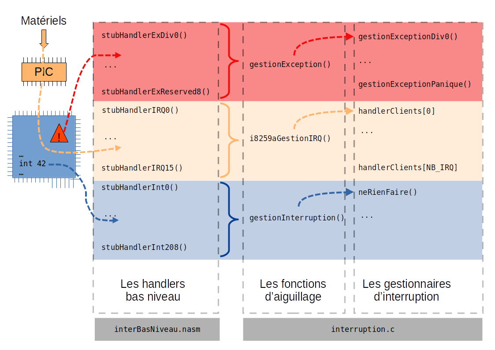

Introduction
Les interruptions sont un outil fondamental dans la communication d’un système avec son environnement. Leur gestion, nécessaire, soulève quelques questions liées notemment au fil d’exécution.
Interruption, exception, code de traitement
Une interruption peut être vue commme la manifestation d’un événement qui va perturber le fil d’exécution en cours sur un processeur. Nous pouvons les classifier en deux catégories
-
Les interruptions asynchrones (que nous appellerons simplement interruptions) sont le fait d’un élément extérieur au fil d’exécution en cours (une touche du clavier a été manipulée, une carte réseau a reçue une trame, …). Nous parlerons également d’irq (ou Interrupt ReQuest pour demande d’interruption).
-
Les interruptions synchrones (que nous appellerons exceptions) sont déclanchées par le processeur lui-même comme conséquence de l’exécution (ou de la tentative d’exécution) d’une instruction.
Une interruption, qu’elle soit synchrone ou non, aura pour conséquence l’exécution par le processeur d’un code, appelé handler d’interruption ou isr (pour Interrupt Service Routine). Ce code est en charge de traiter l’interruption.
Notons qu’il est également possible de générer volontairement une
interruption dans le code en cours d’exécution grâce à l’instruction
assembleur int n (qui déclancher l’interruption de vecteur n). Nous
utiliserons cette option (ajouté au fait que le déclanchement d’une
interruption à de sconséquences plus complexes que le “simple”
déroutement de l’exécution) pour mettre en place le mécanisme des appels
système.
Vecteurs d’interruption, table d’interruption
Chaque interruption est associée à un vecteur qui va faire office d’identifiant. C’est via ce vecteur que le microprocesseur pourra déterminer où est le code du handler qu’il doit exécuter lorsqu’une interruption est déclanchée.
Concrètement, ce vecteur n’est pas directement l’adresse du handler, mais l’indice dans une table, d’un descripteur du code du handler. Il est ainsi possible d’avoir des descripteurs plus riches, qui ne sont pas réduits simplement à l’adresse du code.
La table d’interruptions x86
Sur l’architecture x86, cette table est appelée idt (pour Interrupt Descriptor Table) ; elle contient au maximum 256 descripteurs. Chacun de ces descripteurs est constitué de 8 octets qui décrivent l’adresse du handler, le niveau de privilège requis, le type d’interruption, etc …
Cette table peut se situer n’importe où en mémoire, c’est au système
d’exploitation de l’initialiser et d’informer le microprocesseur de
l’adresse à laquelle elle se trouve et de sa taille. Le noyau utilise
pour cela l’instruction lidt.
Les interruptions
Les exceptions
Les exceptions permettent donc de traiter un comportement erroné du code en cours d’exécution (une tentative de division par zéro, un accès à une zone mémoire protégée, …).
Elles sont traitées par le système de la même façon que les interruptions déclanchées par du matériel. L’essentiel de ce qui est dit ici pour les interruptions l’est donc en particulier pour les exceptions.
Les exceptions x86
Sur les processeurs Intel, les 32 premiers vecteurs sont attribués aux exceptions.
Les handlers d’interruption
Quelle que soit la nature de l’interruption, lorsqu’elle se produit, un code spécifique (le “handler”) est exécuté par le processeur. Ce code doit donc effectuer certaines tâches
-
Sauvegarder l’état du microprocesseur de sorte à pouvoir ensuite reprendre l’activité qu’il menait.
-
Intéragir éventuellement avec le matériel responsable de cette interruption pour le prévenir que le traitement est en cours.
-
Réaliser (ou reporter à un avenir proche) les opérations nécessaires suite à l’interruption : recevoir une trame sur une interface réseau par exemple.
-
Restaurer l’état du microprocesseur qui reprendra où il en était avant l’interruption.
Le traitement différé
Masquage
Une interruption peut éventuellement être masquée, ce qui signifie qu’elle ne sera pas délivrée au processeur, qui ne s’appercevra donc pas qu’un événement s’est produit. Mais le masquage d’une interruption n’empêche évidemment pas cet événement d’arriver !
Traitement d’une interruption : partie haute et partie basse
Le traitement d’une interruption est donc en partie réalisé dans un handler. Pour des raisons de simplicité, nous allons écrire ces handlers en assembleur mais nous y utiliserons dès que possible des fonctions C.
Il est fondamental de comprendre que lorsqu’une interruption est prise en compte par le processeur, le code qu’il était en train d’exécuté est interrompu (surprise ?) pour exécuter le handler. Lorsque l’exécution de ce dernier s’achève, l’exécution du code interrompu reprend son cours. Il est donc crucial que le handler ne réalise pas de modification du système qui rendrait cette exécution incohérente (par exemple en supprimant une ressource que ce code s’appétait à utiliser après s’être assuré de sa disponibilité).
Un autre élément fondamental est le fait que lorsqu’un handler s’exécute, les interruptions ont inhibées et ne peuvent donc plus être prises en compte[1].
Le Programmable Interrupt Controller
Les interruptions peuvent arriver depuis plusieurs sources. Celles provenant de périphériques (clavier, cartes réseau, …) sont éventuellement acheminées au travers de circuits spécialisés appelés pic.
Le pic est donc un circuit électronique permettant de gérer les irq provenant de l’environnement afin de les délivrer au processeur (c’est en fait une fonction du southbridge).
Je ne m’étalerai pas ici sur les différents types de pic ni sur leur fonctionnement. Ce qu’il est nécessaire de comprendre, c’est qu’il existe donc un circuit avec lequel le processeur va devoir dialoguer pour une partie de la gestion des interruptions.
Nous verrons plus loin que ManuX gère le 8259A qui est un pic conçu par Intel.
Le pic Intel 8259A
Sur un (vieux) pc, le pic est un circuit Intel 8259A. Ce circuit permet de gérer 8 types d’interruptions et on en utilise plusieurs en cascade pour les additionner. Nous supposerons ici qu’il y en a deux, le pic 2 étant derrière le pic 1 (en “cascade”) pour un total de 15 interruptions.
Ce circuit, donc on peut trouver la spécification[2] se programme au travers de deux registres
Le registre de commande
accessible par le port 0x20 pour le circuit maître et 0xa0 pour le
circuit esclave ;
Le registre de données
accessible par le port 0x21 pour le circuit maître et 0xa1 pour le
circuit esclave.
Une phase d’initialisation est nécessaire afin de configurer correctement ces circuits.
Définition des handlers
Sur le 386, une table (l’idt pour Interrupt Descriptor Table) définit
le comportement à adopter pour chacune des 256 interruptions et
exceptionns. Cette table est enregistrée grâce à l’instruction lidt.
Cette table contient des entrées de trois types différents
Interrupt Gate
Trap Gate Descriptor
Task Gate Descriptor
Gestion dans ManuX
Observons ici comment tout cela est mis en place dans ManuX.
Nous ne pouvons pas faire l’impasse sur un peu d’assembleur, si bien que
les fonctions “bas niveau” seront implantées dans les fichiers
manux/i386/interBasNiveau.h et i386/interBasNiveau.nasm. Tout le
reste sera en C dans manux/interruptions.h et i386/interruptions.c.
Nous allons traiter séparément les trois types d’interruptions suivants :
-
les exceptions seront gérées ensemble via une fonction commune :
gestionException(); -
les IRQ seront traitées par une fonction commune, liée au PIC utilisé ;
-
les exceptions logicielles seront elles aussi regroupées dans une seule fonction de traitement :
gestionInterruption().
Dans les trois cas, la stratégie sera la même :
-
Nous allons définir en assembleur une fonction de traitement spécifique à chaque interruption. J’appellerai par la suite ces fonctions des handlers d’interrruption. Un handler d’interruption sera chargé d’invoquer une fonction d’aiguillage, écrite en C.
-
Nous allons ensuite définir en C une fonction commune d’aguillage pour chaque type (
gestionException()pour les exceptions par exemple). Le rôle de cette fonction sera d’invoquer la fonction C chargée du traitement de l’interruption qui aura été déclenchée. -
Nous construirons enfin un tableau indexé par le numéro d’interruption et contenant un pointeur sur la fonction C de chaque interruption que l’on souhaite traiter spécifiquement.
La figure suivante illustre cette logique.

Observons maintenant ces différents éléments. Nous allons commencer par écrire les handlers bas niveau en assembleur dans la prochaine section.
Nous observerons ensuite l’écriture en C des fonctions de gestion des interruptions.
Définition “bas niveau” d’un handler
Les exceptions
Nous allons observer à titre d’exemple les fonctions de gestion des exceptions. Certaines exceptions empilent un code d’erreur de 32 bits et d’autres ne le font pas. Comme nous faisons le choix de passer par une fonction unique d’aiguillage, nous allons empiler une valeur nulle sur 32 bits pour les exceptions qui n’utilisent pas de code d’erreur.
Voici par exemple comment est écrit le gestionnaire bas niveau de l’exception 0 (“division par zéro”) qui n’empile pas de code d’erreur :
{language=nasm}
golbal stubHandlerExceptionDivO
stubHandlerExceptionDivO : ; Exception "division par zero"
push dword 0x0 ; On empile un "code"
push dword 0x0 ; On empile le numero de l'exception
pushad ; sauvegarde des registres
call gestionException ; appel de la fonction d'aiguillage
popad ; restauration des registres
add esp, 0x08 ; on "depile" le code et le numero
iret
Et voici maintenant le code du gestionnaire bas niveau de l’exception 0x0a (“TSS invalde”) qui empile l’indice du TSS en erreur :
{language=nasm}
global stubHandlerExceptionInvalidTSS
stubHandlerExceptionInvalidTSS :
push dword 0x0a ; On empile le numero de l'exception
pushad ; sauvegarde des registres
call gestionException ; appel de la fonction d'aiguillage
popad ; restauration des registres
add esp, 0x08 ; on "depile" le code et le numero
iret
Notons que lors d’une interruption, le microprocesseur empile les
valeurs de EFLAGS, CS et EIP (voir par exemple[3] page 159).
Si vous observez le fichier interBasNiveau.nasm, vous verrez que les
32 gestionnaires d’exception sont générées de la sorte grâce à deux
macros.
Les IRQ
En ce qui concerne les IRQ , les choses sont encore plus simples car toutes les interruptions ont le même comportement et les fonctions sont générées (encore via une macro) avec des noms génériques.
Voici par exemple à quoi ressemble le handler généré pour l’IRQ 0 :
stubHandlerIRQ0 :
push dword 0 ; On empile le numero de l'IRQ
jmp handlerIRQ
handlerIRQ :
pusha ; On empile les registres
call MANUX_HANDLER_IRQ ; On appelle la fonction d'aiguillage
popa ; On depile les registres
add esp, 4 ; Depile le numero d'IRQ
iret
Les interruptions logicielles
Une fois de plus, les handlers bas niveau sont générés par une macro. Si nous observons le handler de l’interruption numéro 42, elle ressemble au code suivant
stubHandlerInt42 :
push dword 42 ; On empile le numero de l'interruption
jmp handlerInt
handlerInt :
pushad ; Sauvegarde des registres
call gestionInterruption ; Invocation de la fonction d'aiguillage
popad ; Restauration des registres
add esp, 4 ; On depile le numero d'interruption
iret
Regardons maintenant à quoi ressemblent les fonctions d’aiguillage.
Les fonctions d’aiguillage
Les fonctions d’aiguillage sont extrèmement simples : on utilise un tableau dans lequel sont stoquées les pointeurs de fonction de chaque interruption. La fonction d’aiguillage se contente donc d’invoquer la fonction stoquée à l’indice correspondant.
Pour les IRQ , ce travail est réalisé par une fonction spécifique au pilote du PIC .
Définition d’un handler en C
Nous pouvons par exemple écrire la fonction handlerPanique dont le
rôle est d’afficher un message permettant de déterminer la cause de
l’interruption :
void handlerPanique(uint32_t itNum, TousRegistres registres,
uint32_t eip, uint32_t cs, uint32_t eFlags)
{
...
}
Nous la définissons avec les paramètres qui sont, dans l’ordre inverse, les valeurs empilées par le processeur lors de l’interruption puis par le handler “bas niveau” décrit ci-desssus.
La structure TousRegistres, décrite dans manux/types.h, permet de
manipuler simplement l’ensemble des registres.
Insertion d’un handler dans l’idt
La procédure suivante initialise une entrée dans l’idt :
{}
void positionnerHandlerInterruption(IDT idt, int i, Handler handler)
/*
* Affectation du handler de l'interruption i
*/
{
idt[i].itg.offsetFaible = ((uint32_t)handler & 0xFFFF);
idt[i].itg.offsetFort = ((uint32_t)handler >> 16);
idt[i].itg.parametres = 0x8E00;
idt[i].itg.selSegment = SELECTEUR_SEGMENT_CODE;
}
Elle sera donc appelée par la procédure d’initialisation de l’idt pour chacune des interruptions.
Initialisation de la table IDT
C’est la fonction C initialiserIDT() qui est invoquée par main()
pour initialiser la table.
Nous avons maintenant tous les éléments pour construire notre idt. C’est
le rôle de la fonction C initialiserIDT().
Nous y positionnons donc tous les handlers sur le handler minimaliste qui ne fait rien :
{}
/* Comportement par defaut : on ne fait rien ! */
for (i = 0; i < 256; i++) {
positionnerHandlerInterruption(idt, i, stubHandlerNop);
}
Nous allons ensuite définir un handler un peu plus utile pour les interruptions que peut nous générer le matériel
{}
positionnerHandlerInterruption(idt, 0, stubHandlerPanique_0);
positionnerHandlerInterruption(idt, 1, stubHandlerPanique_1);
...
Nous pouvons enfin définir les handlers plus spécifiques
{}
/* Le handler du timer */
positionnerHandlerInterruption(idt, intTimer, stubHandlerTimer);
/* Le handler du clavier */
positionnerHandlerInterruption(idt, intClavier, stubHandlerClavier);
Gestion du pic Intel 8259a dans ManuX
Ce circuit est géré au travers de fonctions définies dans
include/manux/intel-8259a.h et implantées dans i386/intel-8259a.c.
L’objectif est assez simple : fournir (aux drivers des matériels utilisant un mécanisme d’interruption) une interface générique, c’est-à-dire indépendante du pic utilisé. Nous allons donc définir quelques fonctions de base permettant à ces drivers de s’interfacer avec le système d’interruption. Si on souhaite utiliser un autre circuit pic (par exemple un apic), il “suffira” de réécrire ces fonctions, il n’y aura pas besoin de modifier le code des nombreux drivers (au moins deux, rendez-vous compte du boulot !) qui l’utilisent.
Le principe général consiste à définir un handler d’interruption unique qui va prendre en charge toutes les interruptions générées au travers du pic. Ce handler traitera les aspects spécifiques au pic puis invoquera le handler de chacun des “clients” c’est-à-dire des drivers des matériels qui sont à la source des interrruptions.
Décrivons les fonctions principales. Vous retrouverez leur code dans
i386/intel-8259a.c.
i8259aInit
permet d’initialiser les circuits (le pic) et de les configurer pour que les interruptions générées utilisent une plage de numéros commençant à une valeur passée en paramètre.
i8259aAjouterHandler
permet d’associer une fonction et des données à une irq. C’est par le biais de cette fonction qu’un client va se faire connaître auprès de notre système.
i8259aGestionIRQ
[1] C’est un peu plus compliqué sur un système multiprocesseur.
[2] Intel-8259a-spec?
[3] intel386pru1986?